Lecture 15 Workbook
This workbook holds the notes and the questions for Lecture 15. Each section starts with notes that explain everything on the slides, and a little more. Answer the questions as we discuss the slides. Section 6 is the transit card problem, to do at home as practice. Section 8 has two complete programs to write after class. By the end, you should be able to:
- tell a syntax error from a logic error, and explain what a test can and cannot show;
- read and write a JUnit test class with
setUp,@Testmethods and assertions; - use a method's contract to choose positive, negative and edge test cases;
- create and run a shadow test class in BlueJ;
- follow red, green, refactor to add a method, and trace a failing test with a state table; and
- write complete programs with a class and its test class.
1. Why we test
The cafe classes
The cafe from Chapter 8 has three classes. An Order keeps a customer and a list of menu items, and MenuItem is an enum with a name and a price in cents: coffee 250, tea 200, muffin 325 and cookie 175. In this lecture we add one method, removeItem, to Order. Before we add it, we need a way to check that the existing methods still work afterwards.
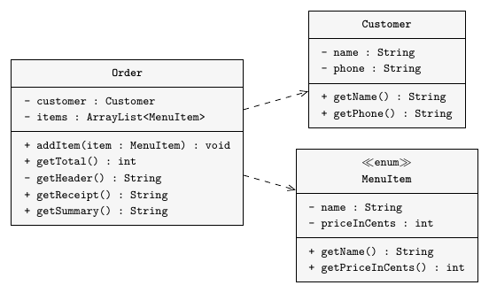
Syntax and logic errors
A syntax error breaks a rule of Java. The compiler rejects the code and reports where it found the error, so the compiler finds these for us. Code with a logic error can compile and run, but it gives the wrong answer. Nothing tells us about this unless we compare the result with the expected result, and that comparison is what a test does.
A test suite
The new removeItem method changes the items list, and getTotal and getReceipt read the same list. If removeItem leaves the wrong items in the list, the total and the receipt can go wrong even though we never edited those methods. It takes time to check every method by hand after each change, so it is easy to skip a check.
Instead, we write a test class for each class and put the tests for its methods there. Together, the test classes form a test suite, and we can run them all at once. In regression testing, we rerun the whole suite after each change. If a test that used to pass now fails, we start by checking the behaviour it covers.
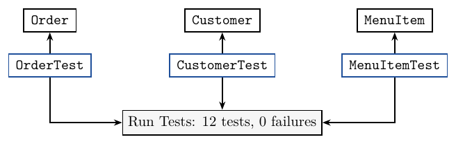
A failing test shows which case went wrong. To find the cause in the code, you still have to debug it. A passing test tells you how the program behaved in that one case. Covering more cases gives you more confidence, but bugs can still go undetected.
Practice
1.1 Classify each problem as a syntax error or a logic error: a method declaration has a missing closing parenthesis; a loop that compiles and runs leaves one ordered item out of the total. Say how each problem can be detected.
1.2 After a change to Order, all 12 tests in the suite pass. What does this tell you about the program, and what does it not tell you?
2. Test classes
A class and its test class
The Order class has the methods addItem and getTotal. Here is its test class with one test. The imports bring in JUnit, the standard Java testing library. A test class has no main method, because JUnit calls its methods for us.
import static org.junit.jupiter.api.Assertions.*;
import org.junit.jupiter.api.BeforeEach;
import org.junit.jupiter.api.Test;
import java.util.ArrayList;
public class OrderTest
{
private Customer ada;
private Order order;
@BeforeEach
public void setUp()
{
ada = new Customer("Ada Lim", "555-0101");
order = new Order(ada, new ArrayList<>());
}
@Test
public void totalOfTwoItems()
{
order.addItem(MenuItem.COFFEE);
order.addItem(MenuItem.MUFFIN);
assertEquals(575, order.getTotal());
}
}Set up, call, check
The test totalOfTwoItems follows three steps, and most tests have the same shape.
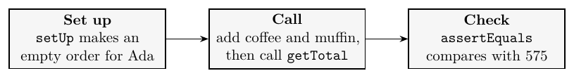
With @BeforeEach, JUnit calls setUp before each test, so each test gets its own empty order and one test cannot spoil the next. We mark each test method with @Test. In these examples, the methods are public void and take no parameters. Name each test for the case it checks.
When you run totalOfTwoItems, JUnit calls setUp, which creates the customer and the order. It then calls the test method, which calls addItem twice and getTotal once. getTotal returns 575, and assertEquals(575, 575) passes.
Assertions
An assertion compares what happened with what should happen. If they differ, the test fails.
assertEquals(575, order.getTotal());
assertTrue(order.removeItem(MenuItem.MUFFIN));
assertFalse(order.removeItem(MenuItem.TEA));Pass the expected value first so the failure message labels it correctly, for example expected: <true> but was: <false>. Without an assertion, a wrong return value can go unnoticed, because a test passes as long as the code runs without an error.
Testing getTotal
getTotal has a loop, so we test it with zero, one and several items: totalOfEmptyOrder expects 0, totalOfOneItem (coffee) expects 250, and totalOfTwoItems (coffee, muffin) expects 575. The loop runs zero times, once and twice. Each case gets its own named test, so if totalOfEmptyOrder fails, the name tells you which case to check.
Practice
2.1 In the test below, which code is the set up, which is the call, and which is the check? (order comes from the setUp shown above.)
@Test
public void totalOfOneItem()
{
order.addItem(MenuItem.COFFEE);
assertEquals(250, order.getTotal());
}2.2 OrderTest has eight tests. Fill in the table.
| Question | Answer |
|---|---|
How many times does JUnit call setUp during one run of all eight tests? | |
One test adds a coffee. What does order.getTotal() return at the start of the next test? |
2.3 order holds two coffees. Write one assertion that checks its total.
| Assertion |
|---|
2.4 Write a test method totalOfThreeItems for an order with a coffee, a muffin and a cookie. Work out the expected total from the prices.
Add the method to the test class. The box includes the cafe classes and runs your test.
2.5 A test adds a coffee and calls order.getTotal(), but it has no assertion. Suppose getTotal is broken and always returns 0. Does the test pass? Explain why.
3. Test cases
The contract
Here is the header of the new method, with its comment. There is no method body yet.
/**
* Remove one copy of item from this order.
* Return true if it was removed. Return false if the
* item is not in the order; the order is then unchanged.
*/
public boolean removeItem(MenuItem item)The method header and its comment make up the interface. The contract says what the caller can expect from the method. The contract gives us enough information to write the tests before we write the method body. We test that the method removes one copy and returns true when the item is present. When the item is absent, we check for false and an unchanged order.
Expected results first
Decide the expected result before running anything, using the prices and the contract. Start with a coffee (250), a muffin (325) and a cookie (175). Removing the muffin should return true and leave a total of 250 + 175 = 425. If you copy the program's answer into the test, the test will accept that answer even if it is wrong. Check the return value and the state of the order after the call, because a method can return true and still leave the wrong items in the list.
Positive, negative and edge cases
A positive test checks that the method succeeds when it should: remove MUFFIN from coffee, muffin and cookie, and expect true and a total of 425. A negative test checks how the method handles a request it should refuse: remove TEA from coffee and muffin, and expect false with the total still 575.
Edge cases test the limits of what a method handles. Removing from an empty order should return false. Removing the only item should return true and leave a total of 0. With two coffees, removing one should return true and leave a total of 250. When testing a loop over a list, check what happens at the first and last items and when the list is empty.
The case you had in mind while writing a method will often pass, and a bug can still show up in another case. So we choose cases that cover each part of the contract, including its edge cases.
The case table
We plan the tests as a table before writing code. Each row becomes one test method, and we fill in the expected values from the prices and the contract.
| Case | Starting order | Call | Returns | Total after |
|---|---|---|---|---|
| positive | coffee, muffin, cookie | remove MUFFIN | true | 425 |
| negative | coffee, muffin | remove TEA | false | 575 |
| empty | (none) | remove COFFEE | false | 0 |
| one item | coffee | remove COFFEE | true | 0 |
| two the same | coffee, coffee | remove COFFEE | true | 250 |
Practice
3.1 An order holds a tea and a cookie. Work out the expected results from the contract and the prices.
| Call | Returns | Total after |
|---|---|---|
remove TEA from a new copy of this order | ||
remove COFFEE from a new copy of this order |
3.2 A programmer runs a method, sees 575, and then writes 575 as the expected result. Why can this accept a mistake? What should determine the expected value?
3.3 Classify each call to removeItem as a positive test, a negative test or an edge case.
| Starting order | Call | Kind |
|---|---|---|
| coffee, tea, cookie | remove TEA | |
| muffin | remove COOKIE | |
| (none) | remove TEA |
3.4 A new method has this contract: public int countOf(MenuItem item) returns how many copies of item are in this order. Fill in the case table.
| Case | Starting order | Call | Returns |
|---|---|---|---|
| empty | (none) | countOf(COFFEE) | |
| absent | coffee, muffin | countOf(TEA) | |
| one copy | coffee, muffin | countOf(MUFFIN) | |
| two copies | coffee, tea, coffee | countOf(COFFEE) |
3.5 A buggy removeItem finds the item and returns true, but never removes it. The positive test has assertTrue(order.removeItem(MenuItem.MUFFIN)) and then assertEquals(425, order.getTotal()). Which assertion fails, and why?
4. BlueJ
Creating a test class
To turn on the testing tools, open Preferences, go to Interface and select Show unit testing tools. Then right-click a class and choose Create Test Class. For Order, BlueJ creates OrderTest and shows it as a green shadow behind Order, with the label «unit test». If you drag Order, its test class moves with it. The Run Tests button on the left runs every test class in the project.
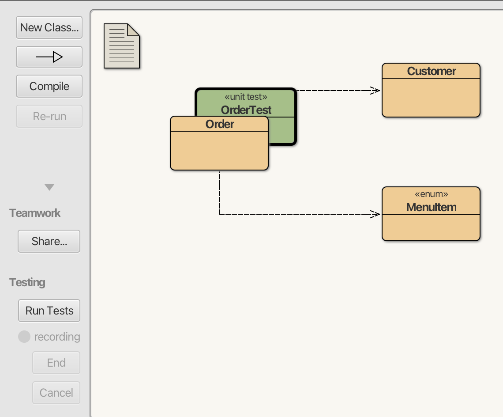
BlueJ generates the imports, an empty constructor, an empty setUp and an empty tearDown. JUnit calls setUp before each test and tearDown afterwards. We put the code that creates the fixture, the objects each test starts from, in setUp, and then add the @Test methods. For OrderTest, we can leave out the empty constructor and tearDown.
The test class menu
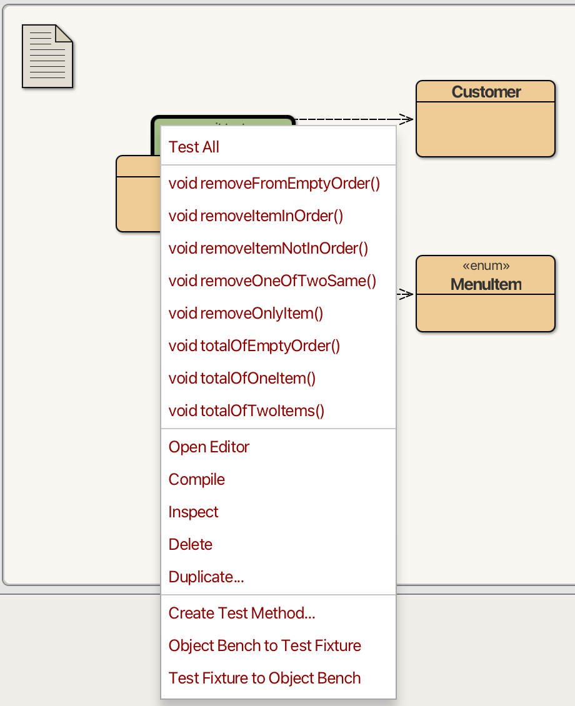
Right-click OrderTest to see its menu. Test All runs every test in this class, and you can run one test by choosing its method from the menu. With Create Test Method, you make objects and call methods by hand while BlueJ records those steps as test code. Object Bench to Test Fixture turns the objects on the bench into the setUp code.
The removeItem tests
Each row of the case table has its own test, and each starts with the empty order from setUp.
@Test
public void removeItemInOrder()
{
order.addItem(MenuItem.COFFEE);
order.addItem(MenuItem.MUFFIN);
order.addItem(MenuItem.COOKIE);
assertTrue(order.removeItem(MenuItem.MUFFIN));
assertEquals(425, order.getTotal());
}
@Test
public void removeItemNotInOrder()
{
order.addItem(MenuItem.COFFEE);
order.addItem(MenuItem.MUFFIN);
assertFalse(order.removeItem(MenuItem.TEA));
assertEquals(575, order.getTotal());
}@Test
public void removeFromEmptyOrder()
{
assertFalse(order.removeItem(MenuItem.COFFEE));
assertEquals(0, order.getTotal());
}
@Test
public void removeOnlyItem()
{
order.addItem(MenuItem.COFFEE);
assertTrue(order.removeItem(MenuItem.COFFEE));
assertEquals(0, order.getTotal());
}
@Test
public void removeOneOfTwoSame()
{
order.addItem(MenuItem.COFFEE);
order.addItem(MenuItem.COFFEE);
assertTrue(order.removeItem(MenuItem.COFFEE));
assertEquals(250, order.getTotal());
}Practice
4.1 Which BlueJ command or button does each job?
| Job | Command or button |
|---|---|
| make a shadow test class for a class | |
run every test in OrderTest | |
| run every test class in the project | |
turn the objects on the bench into setUp code |
4.2 Write a test class CustomerTest with two tests. nameIsKept makes the customer "Ada Lim" with phone "555-0101" and checks getName(). phoneIsKept makes the same customer and checks getPhone(). Include the imports.
The box includes Customer and runs your test class.
4.3 Add one more row to the case table: the order is tea, tea, cookie, and we remove TEA. Write it as a test method removeOneOfTwoTeas, with the return value and the total both checked.
Add the method to the test class. The box includes the cafe classes, with a working removeItem.
5. TDD
Red, green, refactor
In test-driven development (TDD), you write the tests before the code they check. In the red step, you run the tests and check that the new ones fail. To get to green, you write just enough code to make the tests pass. Then you refactor the code, which means you tidy it without changing what it does, and check that the tests still pass. Then the next test starts the cycle again.
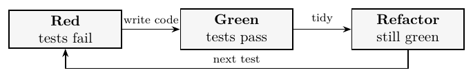
A stub
We already have the tests. A stub is a temporary method body that lets the code compile so we can run them. This one always returns false.
public boolean removeItem(MenuItem item)
{
return false;
}The three tests that expect true fail: removeItemInOrder, removeOnlyItem and removeOneOfTwoSame. The negative and empty-order tests pass because both expect false, and the three getTotal tests pass too. That is 3 failures out of 8, and this is the red step.
A first try
public boolean removeItem(MenuItem item)
{
for(int i = 0; i < items.size() - 1; i++) {
if(items.get(i) == item) {
items.remove(i);
return true;
}
}
return false;
}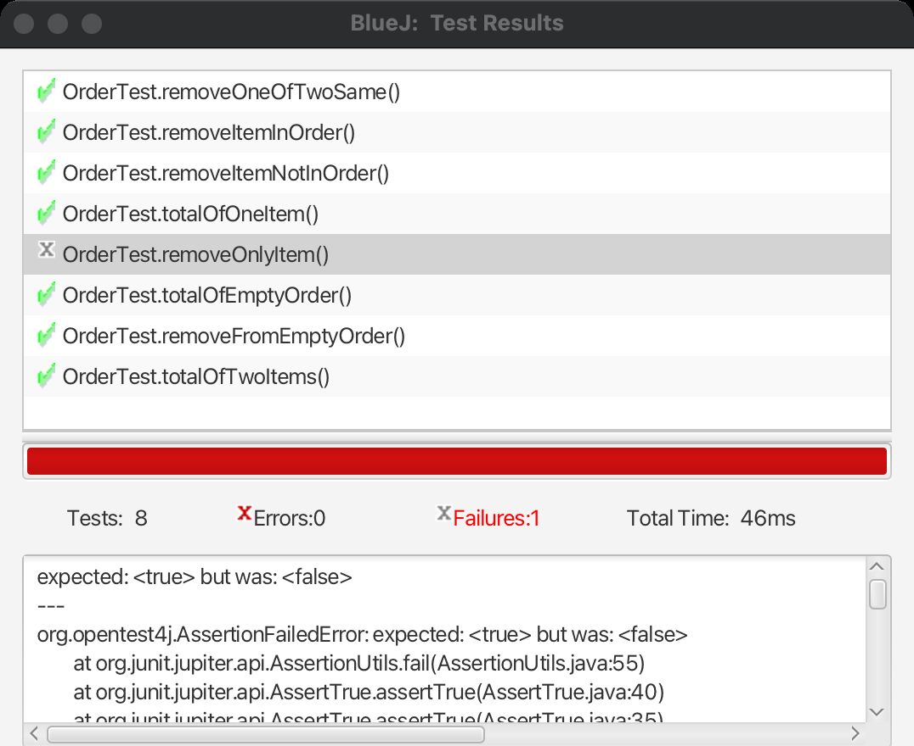
Seven tests pass. removeOnlyItem is the only one that fails, and it expects true and gets false. In the Test Results window, the list shows a tick or a cross for each test, and the lower pane shows the message for the selected test. The window counts failures and errors separately. A failure means an assertion did not hold. An error means something else went wrong, such as an exception.
A state table
To see where the state goes wrong, we trace the failing call and write down the values at each step. Then we compare it with a call that succeeds.
| Order and call | i | size()-1 | i < size()-1 | What happens |
|---|---|---|---|---|
| coffee, muffin, cookie | 0 | 2 | true | coffee: no match |
remove MUFFIN | 1 | 2 | true | muffin: removed, returns true |
coffee, remove COFFEE | 0 | 0 | false | loop ends, returns false |
The first wrong value is the loop limit. With size() - 1 as the limit, the loop skips the last item. For a one-item order, the condition is false on the first check, so the loop never runs.
Fixing the loop and refactoring
We change the limit to i < items.size(), and all eight tests pass. This is the green step. The old loop also skipped the last item in longer orders, so a test that removes the last item from a longer order would catch the same bug.
The refactor step comes next. ArrayList already has a method that meets this contract: remove(Object) removes the first match and returns true, and if it finds no match, it returns false. We replace the loop with one call and rerun the suite, and all eight tests still pass.
public boolean removeItem(MenuItem item)
{
return items.remove(item);
}Regression testing
We keep the eight tests in OrderTest and rerun them whenever we change Order. If all are green, we carry on. If a test fails, we check the change. When you find another bug, add a test that reproduces it before you fix the code. The same test can catch the bug if it comes back.
Practice
5.1 In the red step, why do we run a new test and check that it fails before writing the code?
5.2 Suppose the stub says return true; instead, and removes nothing. Say whether each test passes or fails.
| Test | Result |
|---|---|
removeItemInOrder | |
removeItemNotInOrder | |
removeFromEmptyOrder | |
removeOnlyItem | |
removeOneOfTwoSame |
5.3 Trace the first try for the order coffee, muffin, with the call removeItem(MUFFIN). Fill in the state table.
i | size()-1 | i < size()-1 | What happens |
|---|---|---|---|
| 0 | coffee: no match | ||
| 1 | loop ends, returns the value below |
| Value returned |
|---|
5.4 None of the eight tests has this case. Write a test method removeLastItem for the call in 5.3. With the first try it should fail, which is red.
Add the method to the test class. This box includes the first try at removeItem, so your test should show FAIL.
5.5 A customer reports that getReceipt prints the wrong total after a removal. Before you change any code, what do you write first, and how does it help you later?
6. Practice
TransitCard behaviour
A transit card stores a balance in cents and counts trips, and each trip costs 250 cents. If the balance is at least 250, tapOn deducts one fare, counts a trip and returns true. With a lower balance, it returns false and leaves the card unchanged. topUp adds a positive amount to the balance and returns true, and it refuses zero or less by returning false. newMonth sets trips back to 0 and keeps the balance.
TransitCard test cases
In BlueJ, create TransitCardTest and write one @Test per row. Each test makes its own card with the starting balance in the table.
| Test | Card starts with | Call | Expected |
|---|---|---|---|
tapWithEnoughCredit | 500 | tapOn() | true, balance 250, trips 1 |
tapWithExactFare | 250 | tapOn() | true, balance 0 |
tapWithTooLittleCredit | 100 | tapOn() | false, balance 100, trips 0 |
topUpPositiveAmount | 0 | topUp(500) | true, balance 500 |
topUpNegativeAmount | 300 | topUp(-100) | false, balance 300 |
newMonthResetsTrips | 500, after one tap | newMonth() | trips 0, balance 250 |
The supplied class
The supplied class compiles and runs, but it has two bugs.
public class TransitCard
{
private static final int FARE = 250;
private int balance;
private int trips;
public TransitCard(int balance)
{
this.balance = balance;
trips = 0;
}
public boolean tapOn()
{
if(balance > FARE) {
balance -= FARE;
trips++;
return true;
}
return false;
}
public boolean topUp(int amount)
{
if(amount <= 0) {
return false;
}
balance += amount;
return true;
}
public void newMonth()
{
// Keep the credit for the new month.
}
public int getBalance()
{
return balance;
}
public int getTrips()
{
return trips;
}
}Practice
6.1 Write TransitCardTest with the six tests. Run it on the supplied class with Test All. You should see two failures.
The box includes the supplied card with its two bugs, so two tests should show FAIL. In each test, check the return value first, then the balance, then the trips, in the order the table gives them.
6.2 Use a state table to trace the two failing tests on the supplied class.
| Test | After this call | balance | trips |
|---|---|---|---|
tapWithExactFare | new TransitCard(250) | 250 | 0 |
tapOn() | |||
newMonthResetsTrips | new TransitCard(500) | 500 | 0 |
tapOn() | |||
newMonth() |
6.3 Fix the two bugs in TransitCard, then rerun the suite and check that all six tests pass. Write the two methods you changed.
Fix the supplied class. The box runs the six tests, then tries balances 249 and 251, a top-up of 0 and a second new month.
7. Review
Reading a failure
A failed test gives you the name of the test and a message. The name tells you which case went wrong, and expected: <x> but was: <y> tells you what the assertion saw. Neither tells you which line of the method is wrong. For that, you compare the case with the contract and trace the state.
Practice
7.1 removeOnlyItem fails with expected: <0> but was: <250>. Its assertTrue passed. What do you know about what the method did, and what do you still need to find out?
7.2 A programmer writes only one test for removeItem, the positive case with coffee, muffin and cookie. Name two cases from the contract that this test leaves unchecked, and say what each should do.
8. Complete Java Programs
Write these two programs after class. Each is a class and its test class.
Program A: Thermostat
A thermostat stores a target temperature between 10 and 30 inclusive.
Thermostat()sets the private fieldtargetto 20.getTarget()returns it.setTarget(int target)stores a target from 10 to 30 and returnstrue. For any other value, it returnsfalseand keeps the old target.ThermostatTesthas a fieldheatand asetUpthat makes a newThermostat. It has six tests:startsAtTwenty,normalTarget(22),lowerLimit(10),upperLimit(30),belowRange(9) andaboveRange(31). Each checks the return value, if there is one, and the target after the call.
ThermostatThe box runs the six tests from the specification, then tries 11, 29 and a refusal after a changed target.
ThermostatTestWrite the six tests. Each one should show PASS, because the box includes a correct thermostat.
8.1 Suppose setTarget returns false for 31 but stores 31 anyway. Which test fails, and what message does it show? Why does the check on the return value not catch this bug?
Program B: ScoreBoard
A scoreboard keeps the points and the number of rounds for one game. Use it the TDD way: write the tests from the contract, run them on the supplied class, and then fix the bug.
ScoreBoard()starts withpointsandroundsat 0.getPoints()andgetRounds()return them.recordRound(int points)adds the points and counts one round.reset()starts a fresh game: it must set both fields to 0.ScoreBoardTesthas a fieldboardand asetUpthat makes a newScoreBoard. It has four tests, and each checks both fields.freshBoardexpects 0 and 0.twoRoundsrecords 7 and 5.resetClearsBothrecords 7 and 5, then resets.newGameAfterResetdoes the same, then records 3.
The supplied class has this bug:
public void reset()
{
points = 0;
}With the supplied class, two tests fail:
newGameAfterReset expected: <1> but was: <3> resetClearsBoth expected: <0> but was: <2>
ScoreBoardTestThe box includes the supplied class with its bug, so two tests should show FAIL. Keep the points check before the rounds check in each test.
8.2 Fill in the state table for the supplied class, then find the first wrong row and fix the bug. With the fix, all four tests pass.
| After this call | points | rounds |
|---|---|---|
new ScoreBoard() | 0 | 0 |
recordRound(7) | ||
recordRound(5) | ||
reset() | ||
recordRound(3) |
Which row is the first wrong one, and what does the repair add?
Fix the supplied class. The box runs the four tests, then tries a reset on a fresh board, a repeated reset and a zero-point round.
Lecture summary
Each class in a program can have a shadow test class, with tests for each of its methods. Good test cases cover the whole contract, and the suite is rerun after each change.
Why we test
- A syntax error breaks a rule of Java, and the compiler reports it. A logic error compiles and runs but gives the wrong answer.
- A test finds a logic error by comparing the result with the expected result.
- A new method can break old ones.
removeItemchanges theitemslist, andgetTotalandgetReceiptread the same list. - A test suite is all the test classes together. In regression testing, we rerun the whole suite after each change.
- A failing test shows which case went wrong, and you still debug to find the cause. Passing tests show that those cases work. They do not prove there are no bugs.
Test classes
- A test class holds the tests for one class.
OrderTesttestsOrder. It has nomainmethod, because JUnit calls its methods. - Most tests follow three steps: set up, call and check.
@BeforeEachmakes JUnit callsetUpbefore each test, so each test gets its own empty order.@Testmarks each test method.- An assertion compares what happened with what should happen. Pass the expected value first:
assertEquals(575, order.getTotal()). Also useassertTrueandassertFalse. - A test with no assertion passes as long as the code runs without an error.
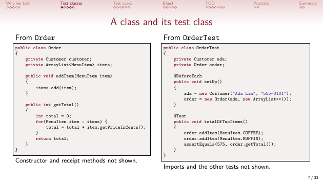
Test cases
- The contract says what the caller can expect from a method. It gives us enough to write the tests before the method body.
- Work out the expected result from the contract and the data before running anything. If you copy the program's answer, the test accepts a wrong answer.
- Check the return value and the state after the call. A method can return
trueand still leave the wrong items in the list. - A positive test checks that the method succeeds when it should. A negative test checks a request it should refuse. Edge cases test the limits, such as an empty list, one item, or two of the same item.
- Plan the tests as a case table. Each row becomes one test method.
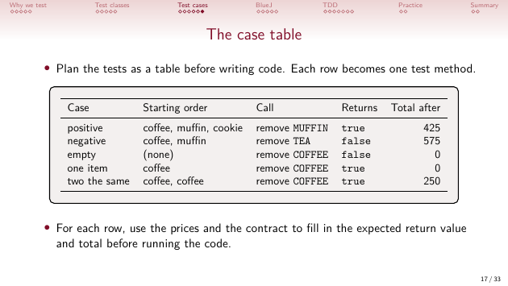
BlueJ
- Turn on Show unit testing tools in Preferences, under Interface. Right-click a class and choose Create Test Class to make its green shadow.
- Test All runs one test class, and Run Tests runs every test class in the project.
- Create Test Method records the steps you do by hand. Object Bench to Test Fixture turns the objects on the bench into
setUpcode.
TDD
- In test-driven development you write the tests first. Red: the new tests fail. Green: write just enough code to pass. Refactor: tidy the code and check that the tests still pass.
- A stub is a temporary body that lets the code compile. The stub that returns
falsegives 3 failures out of 8. - The first try stops at
i < items.size() - 1, soremoveOnlyItemfails. The other seven pass. - A state table traces the values at each step. The first wrong value is the loop limit, and changing it to
items.size()gives eight passes. - The refactor replaces the loop with
return items.remove(item);, and all eight still pass. - When you find another bug, first add a test that reproduces it. The same test can catch the bug if it comes back.
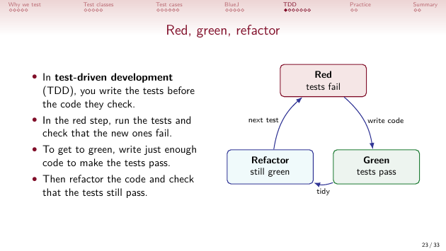
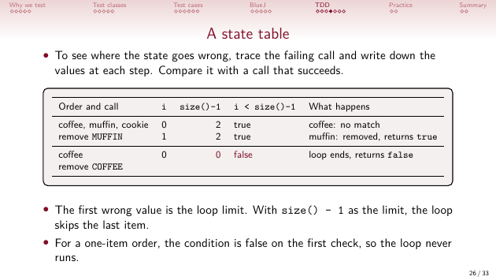
Practice and programs
TransitCardTesthas six tests, and two fail on the supplied card. An exact fare of 250 is refused, because the code uses>where it needs>=.newMonthdoes not reset the trips.ThermostatTestchecks a normal target, both limits and the values just outside them. A refused target must keep the old one.ScoreBoardTestfinds thatresetclears the points and leaves the rounds. The repair addsrounds = 0;.